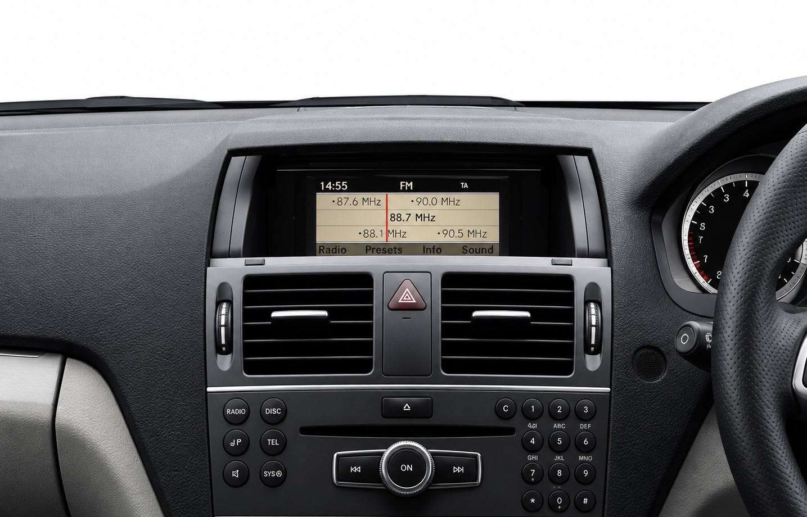

Multimedia Upgrade — Option 1
Premium executive car
Sedan / Estate



Integrate modern smartphone functionality while preserving the vehicle’s interior appearance. Compatibility and installation method depend on the existing head unit.
Adapt supported language settings, radio frequencies and other region-specific features depending on the installed system.
Update compatible navigation maps to the latest supported version available for the system.
Install a compatible rear-view camera with integration to the vehicle multimedia system.
The exact options depend on the vehicle year, head unit and equipment. Contact us to confirm compatibility.